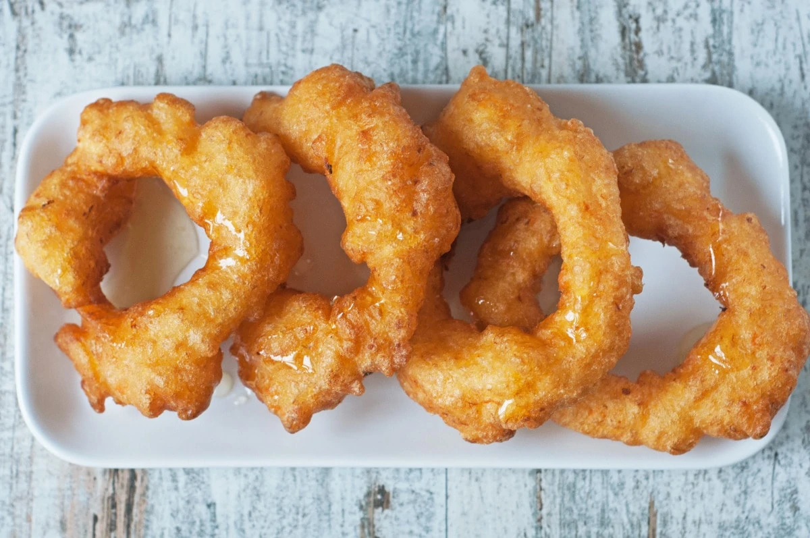

Picarones

Description
Picarones or Peruvian doughnuts are a typical Peruvian treat and are as good as American Doughnuts but are easier to make. This is a traditional Picarones recipe that’s simple to make and the resulting Picarones will tempt you to devour them all.
This recipe uses butternut squash but you can also use pumpkin (which is part of the squash family) and sweet potato.
In fact, a mix of all three is a good way to change the flavors. This would not be considered an easy recipe but with a little care and some practice, you can make delicious desserts that accompany any Peruvian meal, especially anticuchos de corazón.
Ingredients
- 1 Tbs. dry baking yeast
- 1 tsp. sugar
- 1/4 cup water
- 1 Tbs. ground corn or cornmeal
- 1/2 tsp. sea salt
- 1/4 tsp. crushed anise
- 3 cups white flour
- 1 cup premium beer
- 1 cu[ cooked butternut squash pureed
- 1-2 cups brown sugar
- 1 cup water
- 3 lemon or orange peel shreds
Instructions
- Doughnut Instructions: Dissolve sugar and yeast in the warm water, use a small bowl for this.
- Mix cornmeal, salt, anise seed, 1 cup flour and beer in a large bowl. Add the yeast mixture and mix.
- Add squash or pumpkin and 2 cups of flour. Mix together to form a soft dough texture. Cover with a towel and let the mixture rise in a warm place for around 2 hours. You can also let the mixture rise in the refrigerator for 4 to 12 hours if covered with film.
- Syrup instructions: Add the Syrup ingredients in a saucepan and leave to boil over medium heat level. Reduce the heat to low and leave to simmer until a thick syrup forms after 15 minutes or so. Remove saucepan from heat.
- To prepare doughnuts: Heat oil in a wok. Drop tablespoons of dough into hot oil and fry until crispy golden. Drain on paper towels. Serve hot with hot syrup.
Notes
Helpful hints: To test for proper temperature, drop a small spoonful of dough into hot oil; if it rises quickly to the surface, the oil is hot enough.
If using the new quick-acting yeast, use half as much. Add to dry ingredients. Rising time will be reduced by about half.
To reheat doughnuts, place on baking sheets in a 350-degree oven until hot, about 5 minutes.